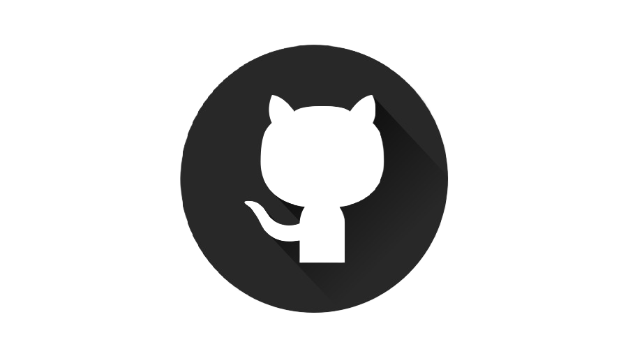

Hola! I'm Yueh Chun Wu
Welcome to my portfolio website! Here, you'll discover a journey of creativity, technical skill, and relentless pursuit of innovation.
Enclosed is my resume for your consideration. I invite you to review it and explore my professional background and achievements.
Me, Myself, and I
As a graduate from the University of California, Irvine, with a Master's in Computer Software Engineering and a stellar GPA,
my education has equipped me with deep knowledge in Data Structures, Algorithms, Network Programming, and Software Testing.
My academic excellence, combined with a keen interest in tackling complex technical challenges, has laid a strong foundation for my career in the tech industry.
In my professional journey, I've made tangible impacts across various roles. At Newegg, I optimized data mining processes,
leading to a significant increase in clicks, and as an intern at GoFreight, I enhanced digital marketing strategies, improving average revenue. These experiences highlight my ability to apply programming skills and analytical insights effectively to drive business growth.
My project portfolio is a testament to my technical skills and innovative approach to problem-solving. Key projects include the JSON.org Enhancement Project and the Jenkins Testing Project at UCI, where I focused on enhancing software functionality and reliability.
Additionally, my work on the Webmail System project involved crafting a full-stack email client-server application, showcasing my ability to integrate technologies like React, Node.js, and NoSQL databases for dynamic data management. These projects have honed my ability to deliver efficient, user-centered software solutions.
Eager to contribute to innovative teams, I am ready to apply my skills and experiences to tackle new challenges in the tech industry ! 🙂
Education
University of California, Irvine
Master of Computer Software Engineering
Sep 2023 – Dec 2024 (Expected)
- GPA: 3.95/4.00
- Related Courses: Data Structures, Algorithms, Network Programming, Database programming, GUI Programming, Web Programming, Software Testing and Debugging, Distributed Software Architecture, Programming Styles
University of California, Irvine
Bachelor of Arts in Business Economics
Sep 2019 − Mar 2021
- GPA: 3.78/4.00
Santa Barbara City College
Associate in Arts in Economics
Aug 2016 − Dec 2018
- GPA: 3.44/4.00
Work Experience
Newegg
Data Mining Analyst
Oct 2021 - April 2022
- Led a project to refine our product ranking system, directly leading to a 17% boost in customer engagement. This improvement helped enhance the overall shopping experience, contributing to higher sales and customer satisfaction.
- Initiated and managed a data cleanup project for better chatbot responses, resulting in more efficient customer service and reduced response times. This directly supported our backend improvements for better service availability and scalability.
- Developed and executed new marketing strategies by analyzing customer data, which increased our email marketing campaign's open rates by 30% and click-through rates by 12%. These strategies significantly contributed to strengthening our market presence and enhancing customer retention.
GoFreight
Digital Marketing Analyst Intern
May 2021 − Oct 2021
- Created data models to predict client value and the likelihood of deal success, aiding a 10% increase in revenue. This work provided crucial insights that helped refine our sales strategies and optimize resource allocation.
- Designed a comprehensive sales funnel analysis using database tools, improving our understanding of customer conversion rates. This analysis played a key role in optimizing our marketing efforts, leading to more effective spending and increased conversion rates.
Project
Jenkins Testing, UCI
Jan 2024 - Mar 2024

- Led a project that improved our software development process, making it 35% faster to release new, high-quality software updates. By focusing on automated testing—from checking small pieces of code to ensuring entire systems work smoothly—we significantly enhanced the reliability of our software, reducing bugs by 50%.
- Technical Highlights: Conducted extensive software testing using Jenkins for Continuous Integration/Continuous Deployment (CI/CD) pipelines, employing tools like JUnit for unit tests and Selenium for browser-based tests. This approach enabled thorough testing across different levels, from unit to integration and functional tests, leveraging Jenkins' capabilities to automate and streamline these processes.
LibraNet Project
Feb 2024 - Mar 2024
- Designed and built a digital library management system that streamlined book access and management for users, improving operational efficiency by 25%. This enhancement led to a significant increase in user satisfaction and resource utilization.
- Technical Highlights: Developed using the MERN stack for a responsive user experience. Leveraged JavaScript and RESTful API design for seamless data processing and accessibility across devices.
JSON.org Enhancement Project, UCI
Jan 2024 - Mar 2024
- Enhanced a web tool, leading to a 40% improvement in data processing speed. This upgrade made it easier and faster for developers to convert and manage web data, directly impacting productivity and project timelines positively.
- Technical Highlights: Enhanced XML to JSON conversion and introduced asynchronous data processing using JavaScript, improving processing efficiency and application responsiveness.
Webmail System, UCI
Sep 2023 - Dec 2023
- Created an email client that simplified email communication, enhancing the speed of email retrieval and sending by 30%. This system provided a more dynamic and efficient communication platform, improving user engagement and satisfaction.
- Technical Highlights: Utilized React, Express/Node.js, IMAP/SMTP integration, and a NoSQL NeDB database. Applied TypeScript, Webpack, AJAX, and Axios to boost the system's performance and user interface responsiveness.